Lejek CC w widoku kanban
Tak wygląda główny widok pracy handlowca w każdym z czterech CRM: kolumny to etapy, karty to leady i transakcje. Etapy wzięte z mapy procesu sprzedaży. Karty są przykładowe. Kliknij kartę, żeby zobaczyć, co CRM o niej wie.
Sprzedaż — od leada do zaliczki
Operacje — od zaliczki do wydania auta
Najdłuższy kawałek procesu to tygodnie importu. Dlatego lejek nie kończy się na „wygrany”: klient czeka i musi wiedzieć, gdzie jest jego auto.
Osobno, poza lejkiem
- Auto na zamówienie (concierge) — osobny lejek albo osobna ścieżka
- Kanał B2B: dealerzy, komisy, floty — osobny lejek
- Podtrzymanie COLD — lista, nie lejek
Automaty wokół lejka
- Licznik czasu reakcji od wpadnięcia leada (obietnica 30 min)
- Rinvo: transkrypcja, streszczenie i ocena leada zapisane do CRM
- Oddzwonienie po nieodebranym i po formularzu nocą
- Alarm HOT do opiekuna
- Zarezerwowany egzemplarz znika ze strony
- Powiadomienia klienta o statusie importu
- Codzienny raport: HOT, oferty, rezerwacje, utracone HOT
Pola na karcie
- Skąd przyszedł: grupa, model, kreacja, wariant, UTM
- Z rozmowy: budżet, finansowanie, firma czy prywatnie, termin zakupu, główna potrzeba, obiekcja, następny krok, ocena leada, transkrypcja, streszczenie AI
- Z operacji: egzemplarz/VIN, status importu, ETA, zaliczka, raport techniczny, oględziny, rejestracja, wydanie
Ścieżka L4 — dogrzewanie ciepłego leada
To jest to, o co chodzi w „sekwencjach dla segmentów”. Nie newsletter do całej bazy, tylko automat: lead wpada do ścieżki sam, dostaje maile pod swój model, a ścieżka reaguje na to, co robi. Pięć kroków odpowiada pięciu obawom z FAQ klienta.
Reguły, które działają przez całą ścieżkę
Ścieżka staje. Handlowiec dostaje zadanie „odpisz dziś”. Automat nie pisze do kogoś, kto już rozmawia.
Zaliczka, oferta albo utrata leada zatrzymuje ścieżkę. Inaczej klient po wpłacie dostaje maila „czy nadal się zastanawiasz”.
Klik „wypisz” zatrzymuje ścieżkę i odnotowuje brak zgody w CRM. Rinvo dzwoni tylko przy zgodzie na połączenia automatyczne.
Ta sama ścieżka w czterech CRM
Każda zakładka pokazuje: jak zbudować L4, prawdziwe zrzuty interfejsu z dokumentacji producenta i twarde limity. Ocena dotyczy tylko automatycznych ścieżek dla segmentów, czyli kryterium K04 z porównania.
| CRM i plan | Automatyczny zapis do ścieżki | 5 maili z opóźnieniem | Odpowiedź / klik | Stop po odpowiedzi | Ocena L4 | Rok, 3 / 5 os. |
|---|---|---|---|---|---|---|
| Pipedrive Premium | tak, wyzwalacz deal/lead + warunki | tak, do 10 opóźnień | odpowiedź: tak, „czekaj na zdarzenie”; klik: śledzony, jako warunek do sprawdzenia | tak, warunek „Email has been replied to” | SPEŁNIA | 9 291 / 15 486 zł |
| Pipedrive Growth | tak | nie, 3 opóźnienia = max 4 maile | tak | tak | NIE | 6 141 / 10 235 zł |
| HubSpot Sales Pro | nie, ręcznie przez handlowca; auto = Enterprise | tak, do 10 maili | tylko odpowiedź | tak, domyślnie | INNY PLAN | 19 829 / 29 161 zł |
| HubSpot Sales Pro + Marketing Pro | tak, z listy/segmentu | tak | tak | tak | SPEŁNIA | 130 174 / 144 171 zł |
| Bitrix24 Professional Vibe+ | tak, lead wpada na etap | tak, reguły z opóźnieniem na etapach | klik i otwarcie: wyzwalacz przesuwa etap | brak dowodu na wyzwalacz „odpowiedź” | CZĘŚCIOWO | 11 520 zł* (pakiet do 100 os.) |
| Livespace Growth | nie, handlowiec uruchamia z profilu | tak | brak rozgałęzień, jest zadanie „brak odpowiedzi” | tak | OSOBNE NARZĘDZIE | 8 112 / 13 520 zł |
* Bitrix24: cena premierowa na pierwsze 12 miesięcy przy zakupie do 10.12.2026. Cena odnowienia nieopublikowana; przy rozliczeniu miesięcznym 19 188 zł/rok. Pipedrive Growth: €39 × os. × 12 × 4,3745 zł. Pozostałe kwoty z PORÓWNANIE_CRM.html.
Pipedrive — złożone sekwencje robi się w Automatyzacjach, nie w Sekwencjach
Pipedrive ma dwa narzędzia o mylących nazwach. Sekwencje to pomocnik handlowca: liniowa lista maili i zadań, do 10 kroków i 250 rekordów na sekwencję, bez rozgałęzień, a zatrzymanie po odpowiedzi trzeba kliknąć ręcznie. Automatyzacje to właściwy silnik ścieżek: odpalają się same dla każdego leada spełniającego warunki i umieją czekać na odpowiedź. Kliknięcia linków są śledzone; czy da się na nich rozgałęzić ścieżkę, sprawdzimy w trialu.
Jak zbudować L4
- Wyzwalacz „Lead utworzony” z warunkami: etykieta WARM i model = segment.
- Akcja „Wyślij e-mail” z szablonu ze zmiennymi: imię, model, link do raportu egzemplarza.
- Opóźnienie, potem warunek if/else „Email has been replied to”: tak oznacza stop i zadanie dla handlowca, nie oznacza kolejny mail.
- Powtórzyć dla maili 2–5. Mieści się w jednej automatyzacji na planie Premium.
- Sygnał „kliknął raport” najlepiej obsłużyć osobną, małą automatyzacją: klik daje zadanie dla Rinvo. Nie krokiem „czekaj na zdarzenie” w głównej ścieżce, bo gdy klient nie kliknie, ten krok kończy całą ścieżkę. Czy warunek if/else widzi klik, trzeba sprawdzić w trialu.
Limity, które realnie przeszkadzają
- Growth: 3 opóźnienia, 3 warunki i 3 kroki „czekaj” na automatyzację. Premium i Ultimate: po 10.
- Maks. 10 akcji na automatyzację; łączne opóźnienie maks. 90 dni.
- Krok „czekaj na zdarzenie” trwa maks. 7 dni. Jeśli nic się nie stanie, automatyzacja się kończy, więc „brak reakcji” buduje się opóźnieniem i warunkiem, nie oczekiwaniem.
- Maile idą ze skrzynki handlowca, max 40 akcji mailowych na minutę na firmę, plus limity Gmaila lub Outlooka.
- Zmiana aktywnej automatyzacji wymaga decyzji, co z leadami w środku ścieżki: zostawić czy anulować.
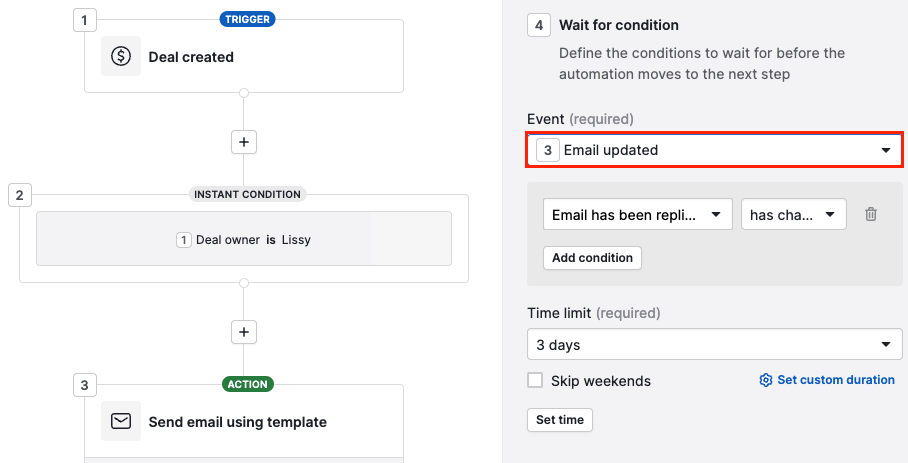
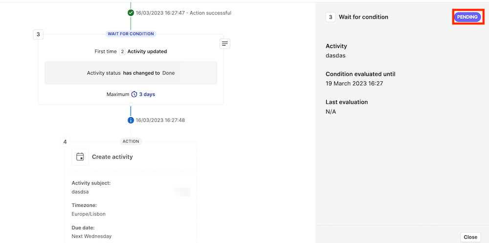
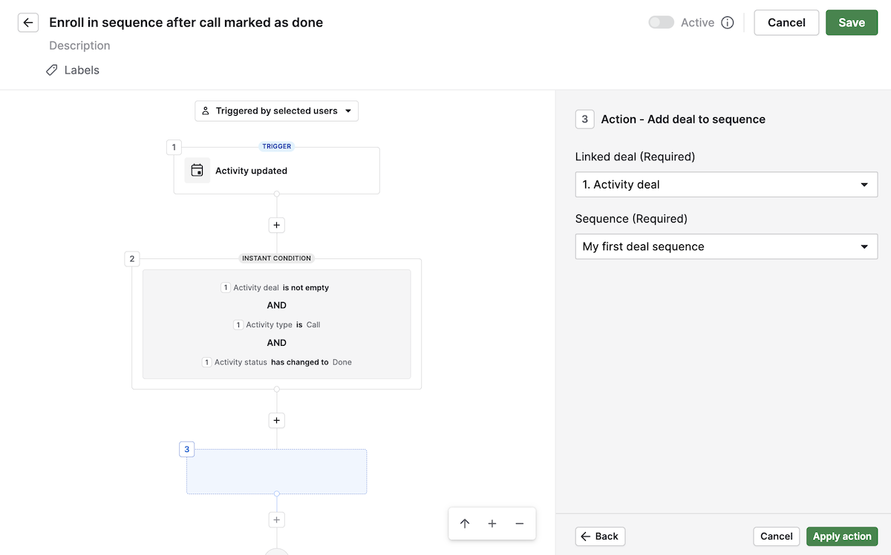
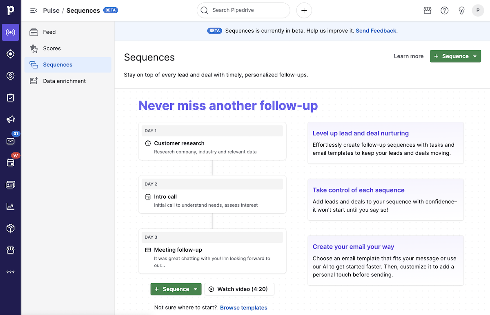
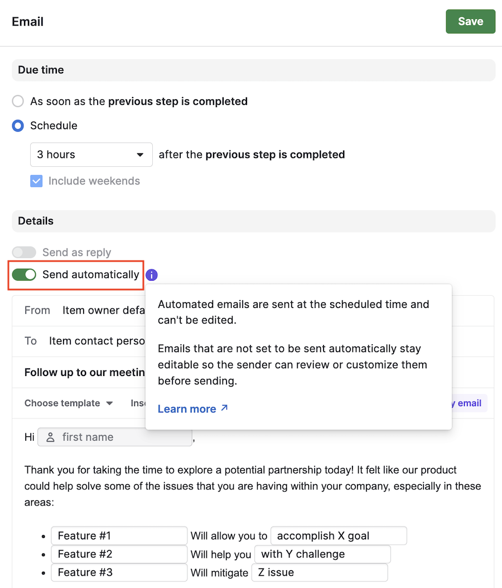
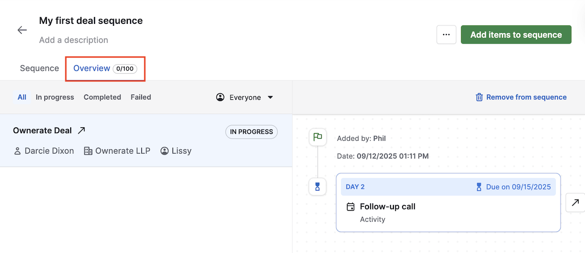
HubSpot — sekwencje są w Sales Hub, ścieżki w Marketing Hub
W Sales Hub Professional sekwencja ma do 10 maili i domyślnie zatrzymuje się, gdy kontakt odpowie. Ale zapisuje do niej handlowiec. Automatyczny zapis przez workflow wymaga Sales Hub Enterprise. Pełne ścieżki z rozgałęzieniami dla segmentów to workflow kontaktowe w Marketing Hub Professional, czyli osobna, droga licencja.
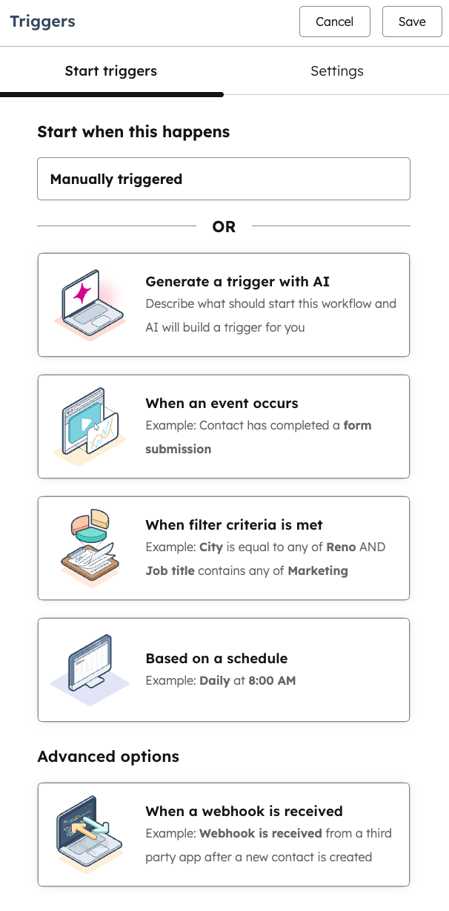
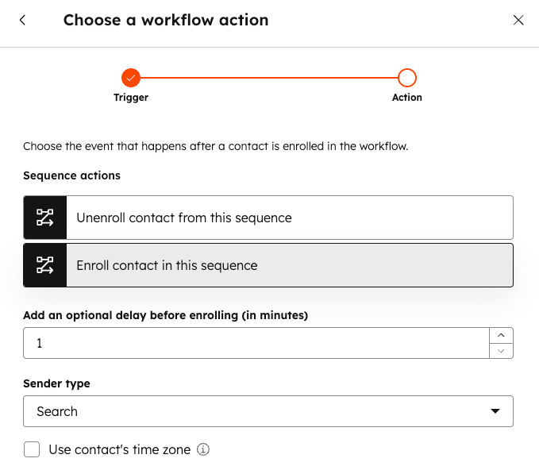
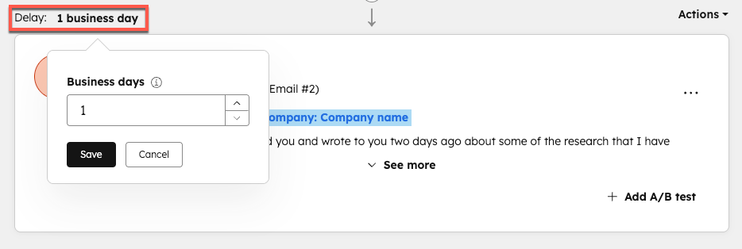
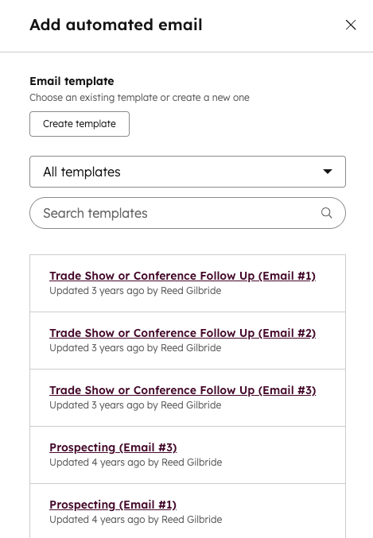
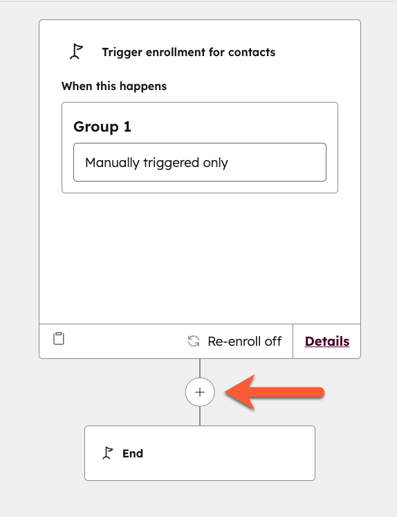
Bitrix24 — ścieżka to etapy z regułami, nie edytor przepływu
W Bitrix24 automat siedzi na etapach lejka. Reguły robią rzeczy, gdy lead wejdzie na etap, na przykład wysyłają maila z opóźnieniem albo pod warunkiem. Wyzwalacze śledzą klienta: otwarcie albo klik w mail przesuwa leada na inny etap, gdzie czekają inne reguły. L4 buduje się jako pomocniczy lejek „Dogrzewanie” z pięcioma etapami.
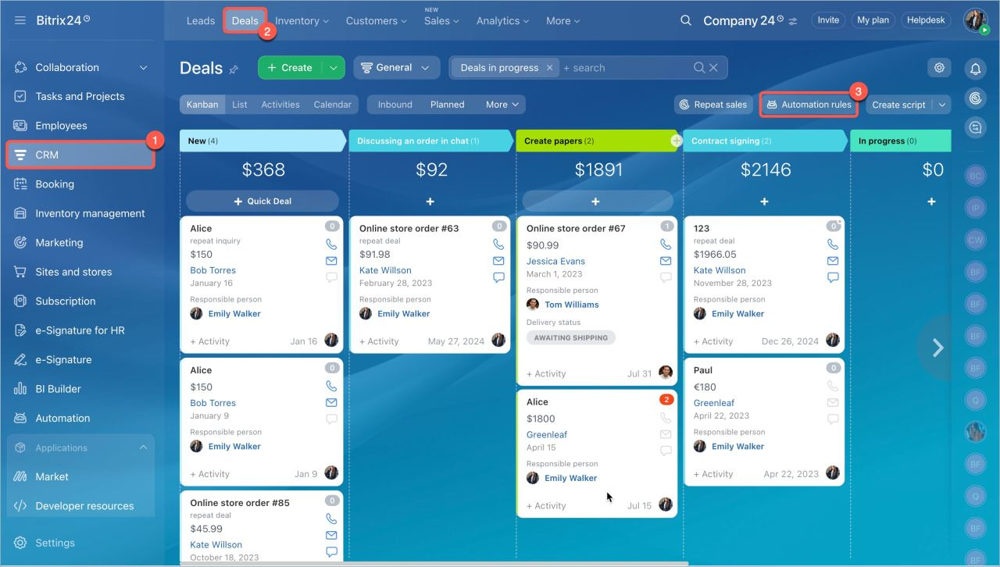
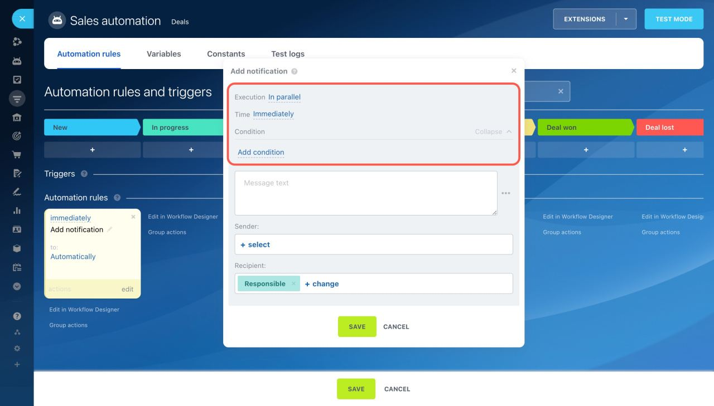
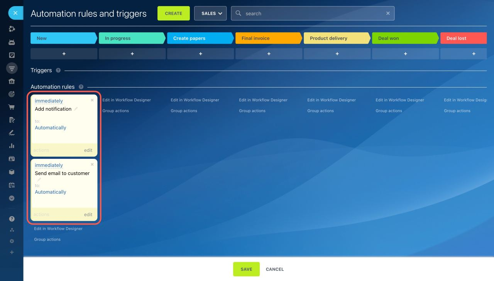
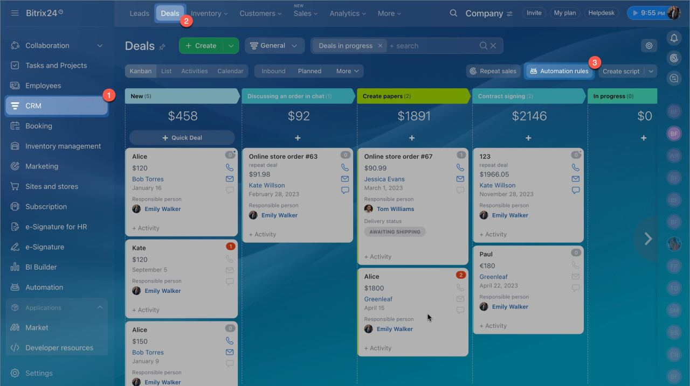
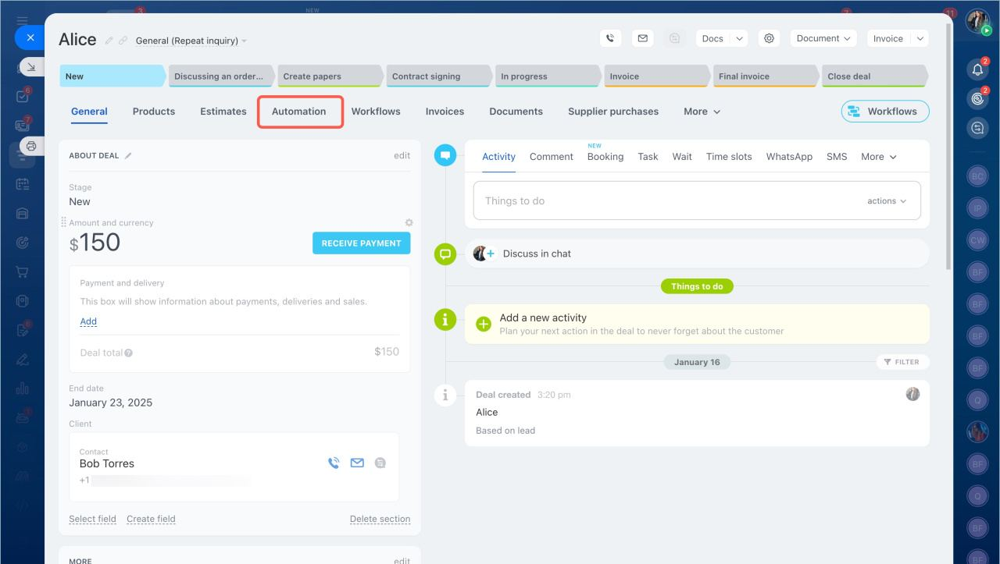
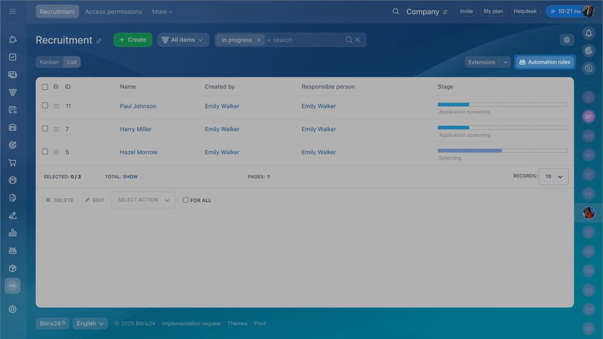
Livespace — dobra sekwencja handlowca, brak automatu dla segmentów
Sekwencję uruchamia się z profilu kontaktu albo szansy przyciskiem „Zaplanuj”. Ma maile ze zmiennymi, zadania, szablony całych sekwencji i zatrzymuje się, gdy klient odpowie. Jest też zadanie typu „zadzwoń, jeśli brak odpowiedzi po 3 dniach”. W dokumentacji nie ma automatycznego zapisu segmentu ani rozgałęzień na klik. Cennik mówi o sekwencjach „uruchamianych na podstawie określonych warunków” — do sprawdzenia w trialu.
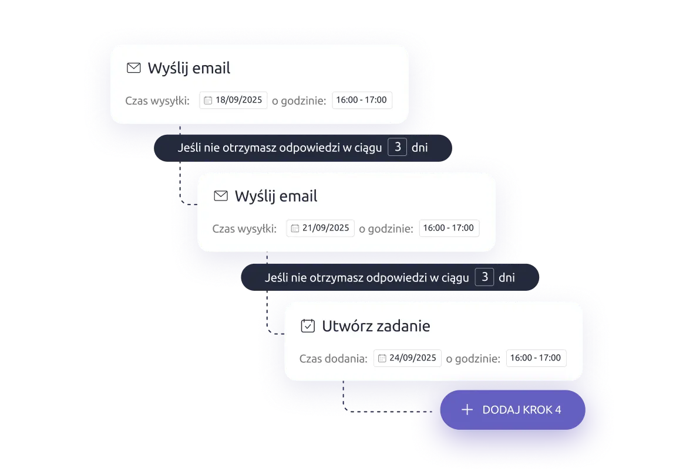
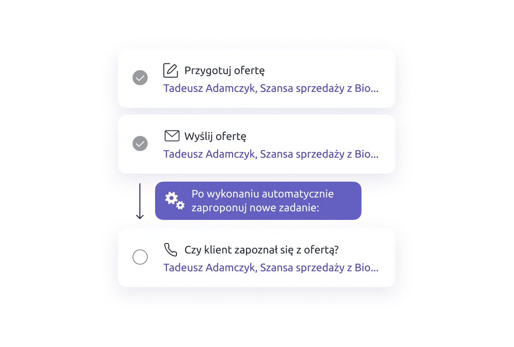
Co jest najtrudniejsze w CRM i czy da się to zrobić na open source
Kanban, baza kontaktów i formularze to łatwa część. Każdy darmowy CRM ma je w tydzień. Trudne jest to, co dzieje się między systemami i w czasie.
Najtrudniejsze — w kolejności bólu dla CC
- Dostarczalność i wykrywanie odpowiedzi. SPF, DKIM, DMARC, rozgrzanie domeny, limity Gmaila. Jeśli automat nie zobaczy odpowiedzi, wyśle mail nr 3 komuś, kto już się umówił.
- Silnik ścieżek. Opóźnienia, okna wysyłki, warunki stopu, zmiana ścieżki z leadami w środku. Pipedrive każe decydować, co z nimi zrobić — to nie przypadek.
- Integracje, które nie gubią leadów. Bitrix24 wysyła w webhooku tylko ID. Livespace uprzedza, że to samo zdarzenie może przyjść dwa razy i w złej kolejności. Potrzebne ponowienia i zabezpieczenie przed duplikatem.
- Duplikaty i zgody RODO. Ten sam człowiek z Meta i ze strony, wypisanie, które działa w każdym kanale, log zgód na połączenia Rinvo.
- Atrybucja. UTM i pola ukryte Meta muszą dojść od kliknięcia reklamy do zaliczki. GA4 widzi stronę, CRM resztę, łączy je ID leada.
- Utrzymanie. Aktualizacje, kopie, monitoring. Ktoś musi odebrać telefon, gdy o 7 rano leady przestaną wpadać.
Open source do postawienia u siebie (zweryfikowane 06.10)
| Produkt | Licencja | PL | Ścieżki mailowe |
|---|---|---|---|
| Twenty ~58 tys. ★, wydanie 05.10.2026 | AGPLv3 + pliki enterprise | tak | workflow no-code, kroki mailowe niepotwierdzone |
| Odoo Community | LGPLv3 | tak | marketing automation w Enterprise |
| EspoCRM | AGPLv3 | ? | tylko płatny Advanced Pack |
| Krayin ~24 tys. ★ | MIT | nie | niepotwierdzone |
| Frappe CRM | AGPLv3 | ? | niepotwierdzone |
| Mautic automatyzacja marketingu, ~10,7 tys. ★, wydanie 23.09.2026 | GPL | ? | tak — to jego rdzeń: kampanie dla segmentów z decyzjami na klik |
Tanie CRM-y AI (Attio od €31, Folk od $24 za osobę/mies.) to lekkie CRM-y relacyjne bez polskiego UI i bez telefonii pod Rinvo. Nie pasują do lejka importu aut.
Rekomendacja
Całość na open source, np. Twenty z Mautic, rekomenduję dopiero wtedy, gdy klient chce mieć własność danych i ma kogoś do utrzymania. Na start koszt pracy zjada oszczędność na licencjach.
TRUTH CHECKER
- Co wiem: limity Pipedrive, HubSpot, Bitrix24 i Livespace z ich dokumentacji (odczyt 05–06.10, cytaty w raw/), licencje i aktywność repozytoriów z GitHuba, lejek i pola z mapy procesu CC.
- Co zakładam: że L4 to 5 maili na lead WARM i że leady spływają do ścieżek na bieżąco, a nie jako jednorazowa wysyłka do 25 tys. kontaktów.
- Co może być błędne: Bitrix24 może mieć wyzwalacz na odpowiedź, którego nie opisuje pomoc. Livespace może uruchamiać sekwencje warunkiem, o czym wspomina cennik. Cena HubSpot Marketing Pro dla mniejszej liczby kontaktów może być niższa niż przyjęte 25 tys.
- Co zweryfikować przed decyzją: trial Pipedrive Premium z ścieżką L4 na testowym leadzie z Meta przez n8n. Odpowiedź Rinvo, z którym CRM ma gotowy konektor. Cena odnowienia Bitrix24 Vibe+.
- Co poprawiłbym z jednym inputem: treść i liczba ścieżek, które klient naprawdę chce prowadzić. Przy jednej ścieżce wygrywa Pipedrive. Przy dziesięciu marketingowych ścieżkach rośnie sens Mautic albo Marketing Hub.
Ile kosztuje własne rozwiązanie na gotowych silnikach
Porównanie trzech dróg dla tego samego zakresu: lejek L1–L4, lead z Meta przez n8n, zapis rozmów Rinvo, ścieżka dogrzewania L4, zgody RODO, raport źródeł leadów, 3–5 handlowców. Licencja to mniejsza część rachunku. Większą są godziny budowy i utrzymania. Suwakami ustawisz stawkę, przyspieszenie z Claude Code i horyzont.
Skąd te godziny
Wycena inżynierska w godzinach od–do, przed przyspieszeniem z Claude Code. Kolumna „AI” mówi, czy praca to głównie pisanie kodu i konfiguracji, które Claude Code realnie skraca, czy testy z prawdziwymi systemami, rozgrzewanie domeny i ustalenia z klientem, których nie skraca.
| Pakiet pracy | AI | A · Pipedrive + n8n | B · Livespace + Mautic | C · Twenty + Mautic + n8n |
|---|
Koszty stałe przyjęte w modelu
| Pozycja | A | B | C | Źródło |
|---|
Co mówią społeczność i GitHub
Przeszukane wzorem skilla /ccse: Hacker News, GitHub, fora Mautic i n8n, blogi. Reddit jest zablokowany dla naszych narzędzi — linki do ręcznego przejrzenia są w pliku źródłowym R11. Twardych liczb o czasie budowy jest mało, za to problemów produkcyjnych sporo.
- Twenty, GitHub #27567, 07.10.2026, priorytet wysoki: wysyłka z Gmaila tworzy zdublowane wiadomości w CRM po synchronizacji skrzynki. Otwarte.
- Mautic, forum wsparcia: wątek „Emails marked »Email sent« but don't arrive” — system pokazuje wysłane, klient nic nie dostaje.
- n8n, forum: „Stop duplicate side effects on webhook retries” — ponowienie webhooka powtarza akcję. Bez zabezpieczenia lead z Meta może wpaść do CRM dwa razy.
- SuiteCRM, studium przypadku z 03.2026: kancelaria bez zaplecza technicznego nie nadążała z aktualizacjami, „the system became unstable and performance declined”. Skończyło się hostingiem zarządzanym.
- Mautic, Open Collective: saldo ok. 6,6 tys. USD przy celu 80 tys. USD rocznie. Projekt żyje, ale budżet na utrzymanie jest cienki.
- Hacker News, dyskusja o agentowym CRM (03.2026): najmocniejszy głos dotyczył bezpieczeństwa — agent widzi wszystkie dane klientów.
- Koszt wysyłki: Amazon SES to 0,10 USD za 1 000 maili, więc 10 tys. maili miesięcznie CC kosztuje ok. 1 USD. Pieniądze idą na pilnowanie dostarczalności, nie na wysyłkę.
- Claude Code: w społeczności brak twardych danych, ile skraca budowę CRM. Domyślne 30% w kalkulatorze to założenie, nie pomiar.
Odrzucone: „25% leadów ginie w n8n” (ogłoszenie na Upworku), case „180 → 8 h miesięcznie” (anonimowa firma, niespójne liczby). Źródła: crm/research/R11_wlasny_crm_ccse/.